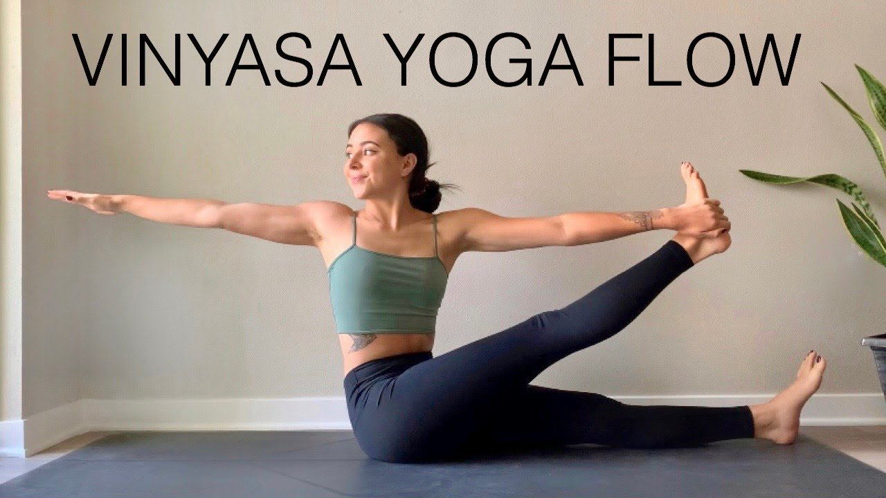

Tipos de Aulas

Vinyasa Yoga
Fluxo dinâmico e ritmado.
Yin Yoga
Posturas suaves e relaxamento profundo.

Meditação
Cultive a tranquilidade da mente.
Encontre serenidade e equilíbrio interior.
Fluxo dinâmico e ritmado.
Posturas suaves e relaxamento profundo.
Cultive a tranquilidade da mente.
"As aulas na Serenity Flow mudaram minha vida. Encontrei paz e equilíbrio que não sabia que existia."
- Maria S., Aluna
"Os instrutores são incríveis! Eles realmente se importam com o seu bem-estar."
- João P., Aluno
O Serenity Flow é um estúdio de yoga dedicado a ajudar as pessoas a alcançar o equilíbrio físico e mental por meio da prática do yoga e da meditação. Nossa missão é proporcionar um ambiente acolhedor e inspirador para todos.
Para saber mais sobre nossas aulas ou agendar uma aula experimental, entre em contato conosco.
Entre em Contato